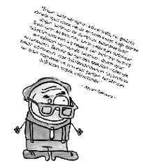

Albert Bandura (1925-)
Polonya kökenli bir çiftçinin çocuğudur. Hâlen turp gibi sağlam olup çalışmalarını sürdürmektedir. Model alarak öğrenme kuramıyla şöhretine şöhret katan Bandura, “gözlemleyerek öğrenme” kavramını bir deneyle ispatlamıştır. Bu çalışma, televizyon programlarının çocuklar üzerindeki etkisini göstermesi açısından da önemlidir.
Bobo Doll adı verilen bu deneyde çocuklara “Bobo Doll” adı verilen bir oyuncağa şiddet uygulanan bir film izlettirilir. Bunu izleyen çocukların Bobo Doll’un olduğu bir odaya alındıklarında oyuncağa saldırgan davrandıkları gözlemlenmiştir.
Bu öğrenme “üzüm üzüme baka baka kararır” misali bir öğrenmedir. Kişiler ve hayvanlar başkalarını gözlemleyerek ya da başkalarını taklit ederek de öğrenebilirler. Öğrenmelerimizin çoğu bu yolla gerçekleşir.
Model alarak öğrenme sayesinde hiç tıraş olmamış bir genç babasını izlediği için ilk tıraşını rahatlıkla olabilir. Ya da hiç yemek yapmamış bir genç kız annesini gözlemlediyse rahatlıkla yemek yapabilir.
Model alarak öğrenme kavramına duyarsızlık gösterip; kendileri de sigara içtiği halde öğrencilere sigara içtikleri için disiplin cezası veren öğretmenlerin, kendileri magazin programı ya da şiddet içerikli film izlerken çocuğuna kitap okumayı öğütleyen ailelerin bu uygulamalarının çoğu kez etkisiz kalmasının bir nedeni de budur.

Mesela Çinli öğretmenler sınıfta yere atılmış bir çöp gördükleri zaman öğrencilere söylemeden kendileri topluyor, sınıfa girdiklerinde tahta kirli ise kendileri siliyorlarmış. Bunu gören öğrenciler hemen öğretmene yardımcı oluyor ve bir daha da öğretmene kirli sınıf bırakmıyorlarmış.